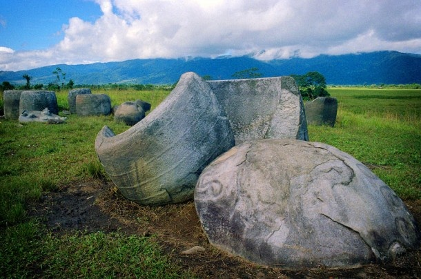

1. Warisan Megalitikum yang Misterius
Lembah Bada terletak di dalam kawasan Taman Nasional Lore Lindu, Poso, Sulawesi Tengah. Cagar budaya ini sangat terkenal karena menyimpan puluhan **patung megalitikum (batu raksasa)** yang tersebar di area padang rumput. Uniknya, struktur wajah patung-patung ini dipahat dengan sangat minimalis namun tegas—memiliki mata bulat besar, hidung lurus, tanpa mulut—yang kemiripannya sering disandingkan dengan patung Moai di Pulau Paskah.

2. Teka-teki Fungsi dan Asal-usul
Hingga saat ini, para arkeolog belum mengetahui secara pasti siapa suku purba yang memahat batu-batu raksasa ini dan apa tujuan sebenarnya. Beberapa teori menyebutkan bahwa patung-patung manusia ini berfungsi sebagai lambang penghormatan kepada roh leluhur, batas wilayah adat, atau bagian dari ritual keagamaan masa lampau. Selain patung manusia, di lembah ini juga ditemukan *Kalamba*, yaitu bejana batu raksasa yang diduga berfungsi sebagai tempat penyimpanan air atau peti kubur purba.
Pentingnya Pelestarian
Lembah Bada adalah bukti nyata kekayaan arkeologi prasejarah Indonesia yang bertaraf dunia. Menjaga kelestarian fisik batunya dari vandalisme dan kerusakan alam adalah langkah krusial demi ilmu pengetahuan generasi mendatang.